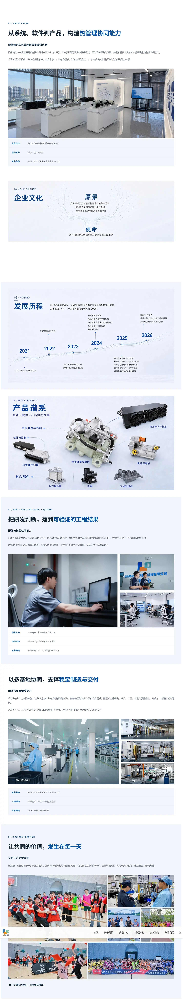
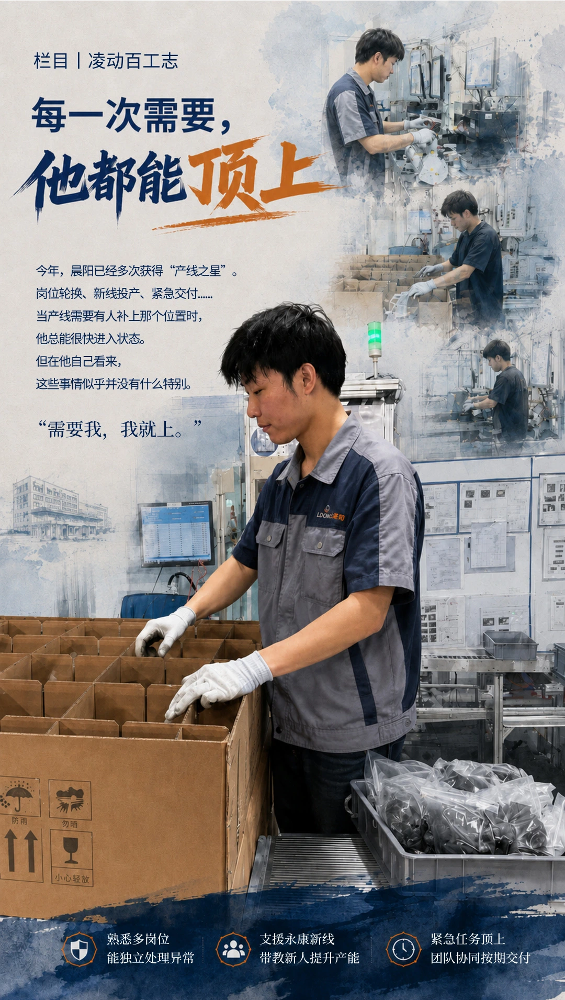
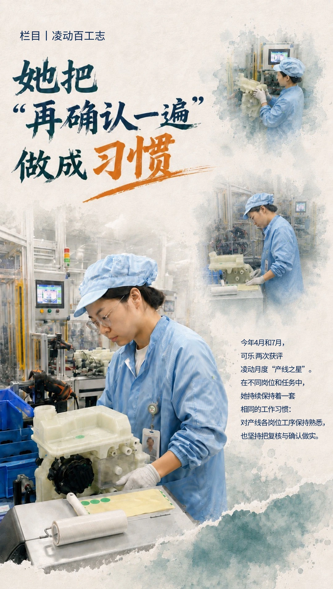

李轩然
企业传播 / 品牌内容
把企业、业务与现场，
讲成能够被理解的内容。
3年+企业传播相关经验，经历基建、半导体与新能源汽车行业。围绕品牌内容、产品与技术、企业新闻和人物故事，完成从信息采集到多载体呈现的传播工作。
精选案例
从工程项目现场、内容运营到品牌建设，回答的是同一个问题：复杂的信息，怎样成为清晰的传播内容。
凌动科技
企业品牌内容升级
让一家制造企业的品牌信息，拥有更清楚的表达。
围绕企业介绍、产品中心与招聘等实际上线页面，梳理企业与业务信息，并在既有 CMS 环境中完成内容与视觉更新。
阅读完整案例 ↗


国微电子
企业内容传播体系
让长期发生的企业信息，形成可阅读的内容。
在半导体企业参与公众号运营与重点议题传播。2024年5—12月发布155篇内容，覆盖企业新闻、管理议题、人才与组织传播。
阅读完整案例 ↗MAY — DEC 2024


苍昭高速
工程项目传播
从建设现场出发，把工程过程讲给更多人听。
长期进入工程一线，围绕现场、重大节点和建设者，参与项目新闻、摄影摄像、画册及宣传片内容工作。
阅读完整案例 ↗


更多项目
三个更聚焦的内容切面：产品与制造、企业人物故事，以及跨媒介的视觉表达。


凌动科技｜制造与技术传播
从产品页面到真实产线影像，把技术信息与制造过程转化成清晰的传播内容。
查看项目 ↗


凌动百工志｜企业人物故事
从采访与工作细节出发，写出不同岗位的人，建立企业品牌更具体的人物表达。
查看项目 ↗视频与视觉传播合集
年度影像、内部刊物与跨屏视觉，在不同媒介里寻找适合内容的表达方式。
查看项目 ↗我的工作方式
先进入业务和现场，弄清楚传播要回答什么，再决定内容如何到达读者。
理解企业与业务
先找到事实、现场、专业信息和真正需要沟通的人。
组织传播重点
从复杂资料里提炼读者能理解的议题与信息顺序。
选择表达载体
新闻、人物、官网、视觉和视频，各自回应不同任务。
完成实际交付
在时间、系统和协作条件下，把内容变成可发布的作品。
经历过的行业与现场
工程建设、半导体与新能源汽车：内容工作从具体事实开始，逐步建立对业务的理解。
杭州凌动汽车热管理科技有限公司
企宣副主管企业品牌内容 / 产品与技术传播 / 制造现场
深圳市国微电子有限公司
企业文化专员企业内容运营 / 管理议题 / 整合传播
中建五局土木公司广西分公司
项目综合管理员工程新闻 / 项目画册 / 宣传片脚本
一些“我”
新闻学背景，现居杭州。
从工程一线的采访采集，到半导体企业的长期内容运营，再到新能源汽车公司的官网与品牌内容，我逐渐确定了自己的方向：理解企业、业务与具体工作，把它们转化为可阅读、可观看的传播内容。
对我而言，企业传播的起点不是一句好听的话，而是先找到值得被讲述的事实。